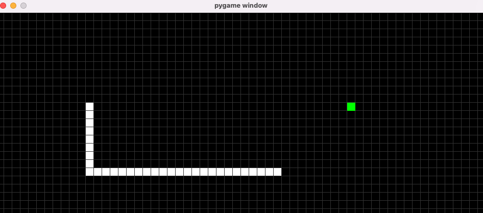
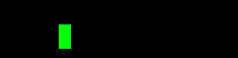

Snake
 1- Instal Required Libraries
Option 1) System level installation
pip install pygameOption 2) Install Pygame in a virtual environment
# 1. Install Miniconda (or Anaconda)
# The official page has very clear instructions
# https://docs.conda.io/en/latest/miniconda.html
# 2. Create virtual environment
conda create -n env_name # I called it `snake_env`
# 3. Activate the virtual environment
conda activate env_name
# 4. Install needed libraries
conda install pip
pip install pygame
2- Pygame preliminary
Before starting the design process, let us familiarize ourselves with basic Pygame functionalities.
In the following code we will
- create a window,
- fill it in with a color and,
- draw a rectangle
import pygame
# Initialize pygame modules
pygame.init()
# define a window (or screen) to draw on it
# window's width, height
screen = pygame.display.set_mode((400, 100))
# define colors in RGB
BLACK = (0,0,0)
GREEN = (0, 255, 0)
# set a flag to terminate exection when it is set to False
running = True
# this while loop will keep executing until the user click the close button
while running == True:
# get user events
for event in pygame.event.get():
# pygame.QUIT happens when the user click the close button of the window
if event.type == pygame.QUIT:
running = False
# make the background color of the window back
screen.fill(BLACK)
# Draw a rectangle color position width, height
pygame.draw.rect(screen, GREEN, (100, 40, 20, 40))
# Update the screen
pygame.display.flip()
# quit pygame
pygame.quit()
Output:
Let us draw a grid :
To do so we create a functiondraw_grid that has a nested loops to draw rectangles with a small gap inbetween to make a grid.
import pygame
pygame.init()
# define a cell size
CELL = 20
GAP = 1
# To have a nice grid, define the width and height to be multiple of the cell size
width = 20
height = 5
BLACK = (0,0,0)
GRAY = (40, 40, 40)
screen = pygame.display.set_mode((width * CELL, height * CELL))
def draw_grid(cell=CELL, color=BLACK, w=width, h=height):
"""This function draw a gird.
Note: the background color must not be the same as the cell color"""
# w//cell : allow us to progress on a cell level instead of a pixel level
for i in range(w):
for j in range(h):
# cell-GAP: to make a grid we draw a rectangle that is bit smaller than CELL
rect = (i * cell, j * cell, cell-GAP, cell-GAP)
pygame.draw.rect(screen, color, rect)
running = True
while running == True:
for event in pygame.event.get():
if event.type == pygame.QUIT:
running = False
screen.fill(GRAY)
draw_grid()
pygame.display.flip()
pygame.quit()
Output:

3- Requirements
- We shall make the environment as a grid (or virtual grid)
- The snake must move across a complete cell of the grid. For example, the snake must not move half a cell.
- The food shall be generated randomly, but it must occupy a complete single cell.
- If the snake finds food, it becomes longer by one cell.
- If the snake hit the border or itself, it dies.
4- Define the
A vertex is an intersection point on the grid.
Our simple math considers the top left vertex of a cell.
A few vertices are highlighted in the following figure. Vertex and Direction class
To move the snake and place the food accoding to the requirements, we need to add, subtract, and compare vertices. These functionalities are enabled by defining a few special python methods. Namely
__add__for addition,__sub__for subtraction and,__eq__for equality.
class Vertex:
'''a vertex represents the top left corner of a square'''
def __init__(s, x, y , cell_size=CELL):
s.cz = cell_size
s.x = x * cell_size
s.y = y * cell_size
# print(s)
def __add__(s, p):
return Vertex( (s.x + p.x) // s.cz , (s.y + p.y) // s.cz)
def __sub__(s, p):
return Vertex( (s.x - p.x) // s.cz , (s.y - p.y) // s.cz)
def __eq__(s, p):
if not isinstance(p, Vertex):
# don't compare againt unrelated types
return NotImplemented
return s.x == p.x and s.y == p.y
def __repr__(s):
return f'Vertex{s.x, s.y}'
Vertex in the initialization step by the cell_size.
However, in the addition and subtraction methods we divide by the cell_size since these methods return
a new Vertex after adding/subtracting two
Vertex objects. This division prevent double scaling.
Now let us define the
Direction class to make our main code more readable.
class Direction():
RIGHT = Vertex(1, 0)
LEFT = Vertex(-1, 0)
DOWN = Vertex(0, 1)
UP = Vertex(0, -1)
5- Define the
SnakeGame class5.1 Initialization
- set the size of the window of the game
- set the clock so the game will run very fast
- set initial direction
- define snake position
- place food
class SnakeGame:
def __init__(s, w=60, h=30):
s.w = w
s.h = h
s.display = pygame.display.set_mode((s.w * CELL, s.h * CELL))
s.clock = pygame.time.Clock()
# set initial game state
s.step = Direction.RIGHT
s.head = Vertex(s.w//2, s.h//2)
s.snake = [s.head, s.head - Vertex(1, 0) , s.head - Vertex(2, 0)]
s.score = 0
s.food = s._gen_food()
5.2 Good Generation
Randomly place food but not on the snake.
def _gen_food(s):
food_v = Vertex( random.randint(0, s.w-1 ), random.randint(0, s.h-1))
if food_v in s.snake:
# if food_v is on the snake generate a new food_v
s._gen_food()
return food_v
5.3 Direction
In the following method, we check if the user press an arrow on the keyboard to change direction. The direction is saved tos.step to maintain the selected direction after the user releases the button.
Also, we check if the user closes the window. If the user did, we terminate the game.
def _handle_user_input(s):
'''This method handles user input'''
for event in pygame.event.get():
# pygame.QUIT event happens when the user click on the window closing button
if event.type == pygame.QUIT:
pygame.quit() # quit pygame
# check if a key is pressed
if event.type == pygame.KEYDOWN:
if event.key == pygame.K_LEFT:
s.step = Direction.LEFT
elif event.key == pygame.K_RIGHT:
s.step = Direction.RIGHT
elif event.key == pygame.K_DOWN:
s.step = Direction.DOWN
elif event.key == pygame.K_UP:
s.step = Direction.UP
5.4 Move the snake
After selecting the desired direction, we update the head position and insert it in the first place in the snake data structure (i.e. the snake list). If there is no food in the new head position, we drop (orpop) the trail to
make the snake move without getting longer.
def move_snake(s):
s._handle_user_input()
s.head += s.step
s.snake.insert(0, snake.head)
if not snake.there_is_food():
snake.snake.pop()
However, if there is food, we increase the score and generate new food cell.
def there_is_food(s):
if s.head == s.food:
s.score +=1
print(s.score)
s.food = s._gen_food()
return True
return False